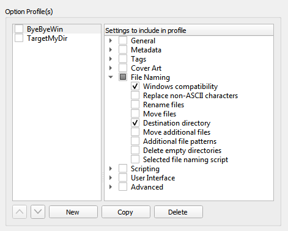

Profile Options
{kind=link}
As of version 2.7, Picard supports multiple profiles that can quickly switch between option settings. This page allows for the management of those user-defined option profiles.
Initially, the list of profiles will be empty. To create a new profile click on the New button. This will create a profile with no options selected for the profile to manage. To rename the profile, right-click on the profile name and select the command.
The options that the profile is to manage are selected from the list in the right-hand pane. Options can be selected either by group or individually. The groups can be expanded to see the individual options belonging to that group.
The profile stack order can be rearranged either by selecting a profile and using the up and down arrow buttons below the list, or by dragging the profile to a new position in the stack. Profiles are enabled when the box beside the profile’s name is checked.
Changes made to a profile’s options settings, enabled status, or position in the profile stack will be reflected in the option settings displayed on the other pages. Options that are controlled by an enabled profile will be shown as highlighted. Hovering your cursor over the highlighted option will identify which profile currently controls the setting. Settings are always displayed based on the first enabled profile in the profile stack, which corresponds to the setting that will be used during processing.
Warning
It is important to understand that when you click the Make It So! button all of the option settings on all pages will be saved. If an option is managed by one or more profiles that are currently enabled, the option will be highlighted and it will be saved to the first enabled profile in the profile stack that manages the option. If there are no enabled profiles that manage the option, the option will not be highlighted and it will be saved to the “user settings” profile which is the user’s normal settings, contains all options, is at the bottom of the profile stack, and is always enabled. The “user settings” profile cannot be modified and is not shown in the profile management page.
See also
Please see the Option Profiles section for a detailed explanation of the profile system.